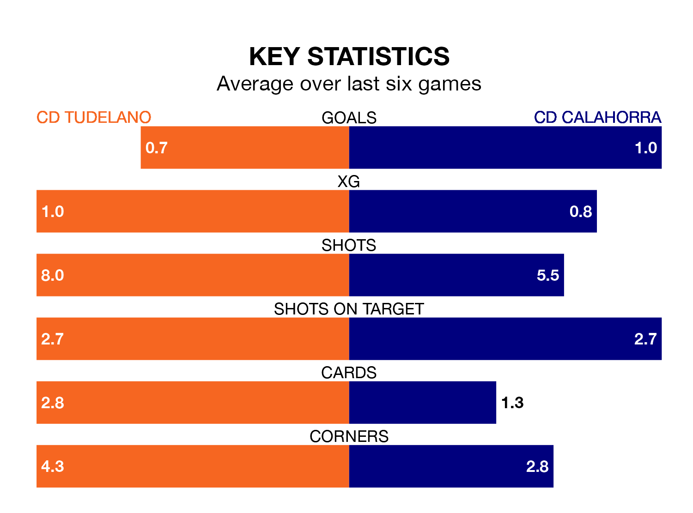

CD Calahorra face CD Tudelano on Sunday seeking to protect their long unbeaten run in the Segunda División RFEF Group 2.
Calahorra are unbeaten in six, with three wins and three draws, ahead of the 4pm kick-off.
They face a Tudelano team who have drawn three and lost three over the same number of games.
With 17 goals in 22 games so far this season, Calahorra are scoring at below the league average rate with 0.8 goals per game. But they are conceding fewer than average too, letting in 22 goals at a rate of 1.0 per game.
Tudelano, meanwhile, are above average scorers, with 1.2 goals per game, compared to a league average of 1.1. They have conceded 1.1 goals per game.
In the last 10 years, Tudelano and Calahorra have played each other on nine occasions. They won two each, and they drew five times.
On average, Tudelano scored 0.8 goals and Calahorra 0.9 in those matches.
Their last meeting was on October 8, when Tudelano won 2-0 away.
The home side are eighth in the table after 22 games, of which they have won seven and drawn eight, earning 29 points.
The visitors are two places behind Tudelano in 10th, with eight wins and five draws putting them on the same number of points.
Tudelano's last match was on February 11, a 3-1 loss against Barakaldo CF.
Calahorra beat Utebo 1-0 last time out, also on February 11.
Updated: 09:02 (UTC), 13/02/24